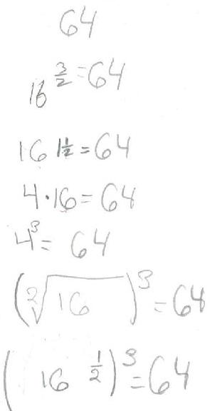

Sheri writes 64 using exponents 6 ways

Sheri
solves the quadratic equation x2 - x - 1 = 0
Sheri
finds the base for Don's age of 114? =
7110
Sheri
uses the quadratic formula to find base for Don's age of
114? = 7110
Sheri
finds the measure of an inscribed angle
Sheri
uses binary numerals to make the Magic Number Game cards
Sheri
changes the shape of a dog using matrices
Sheri
enlarges a shell using the pantograph
Sheri
moves a parabola and finds the equation
Sheri
finds the ratio of The Volume of a Pyramid / The Volume of a Cube (3 ways)
Sheri
works with the sand pendulum
Sheri
figures out a rule for The Tower Puzzle
Sheri
starts Trig